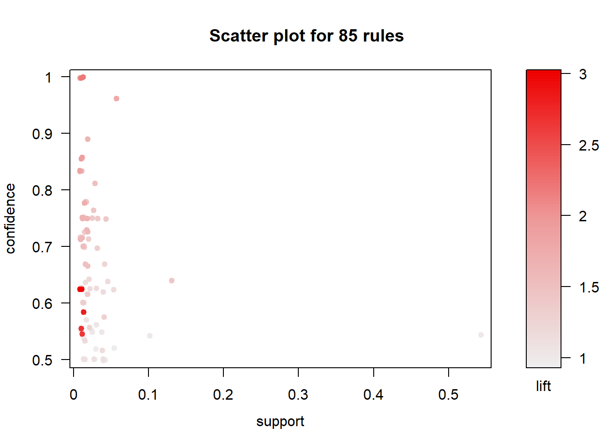
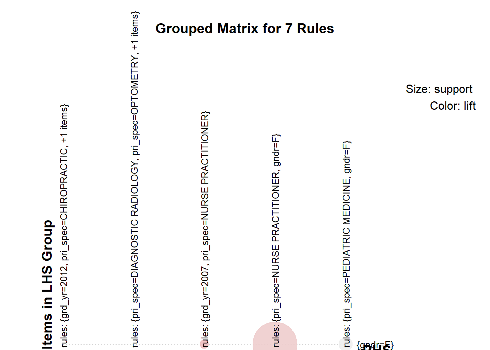
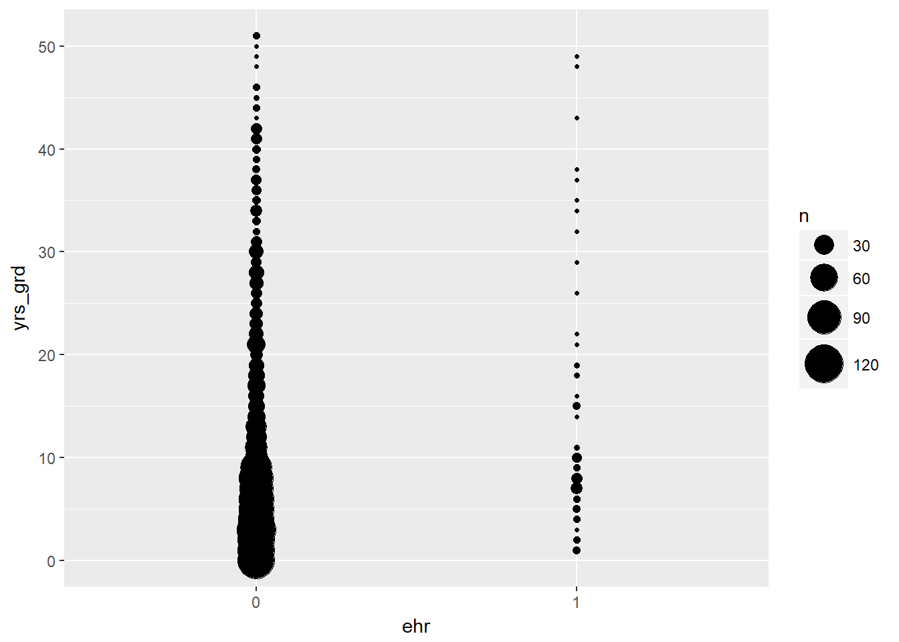
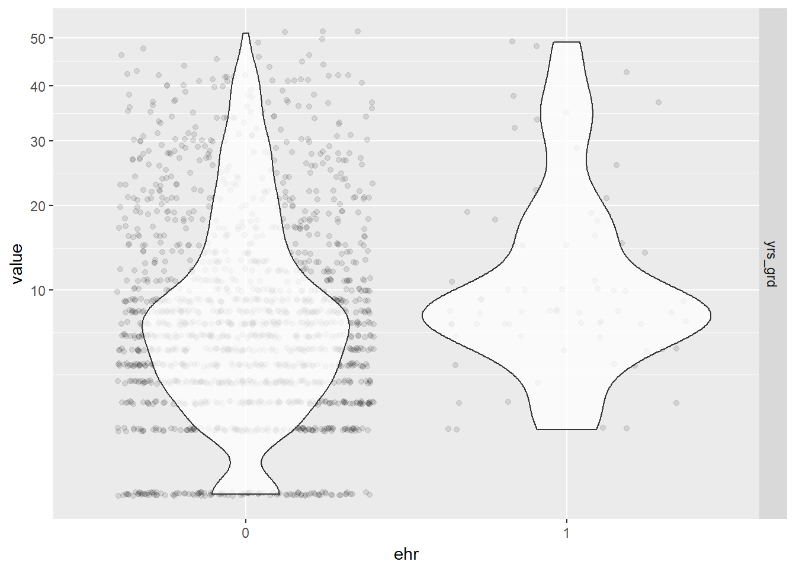

Chapter 5 Primary Analysis
[resate our primary objectives here and explain why we split the primary analysis into the following sections]
5.1 Physician Demographics
Since practitioners who are affiliated with a hospital may not have a choice in using EHR or not, we will exclude these from our analysis population, which is now just the practitioners who enrolled in the Medicare Incentive Program who are not affiliated with any hospital, which come from the data set EPs that we cleaned in section 4.1.
EPs <- readRDS("./data/EPs.rds")[explain that we are doing logistic regression model because of our binary outcome EHR use, and write out the mathematical theory and methods here.]
5.1.1 Exploratory
Before fitting our model, we explored the relationships between our variables of interest using Association Rule Learning. We will use the R package called arulesViz to help us visualize this because we have mostly categorical variables with too many levels for simple correlation matrices to handle.
Here, each “transaction” is a practitioner who adapted EHR as part of the Medicare EHR Incentive Program in the U.S.
library("arulesViz")## Loading required package: arules##
## Attaching package: 'arules'## The following object is masked from 'package:car':
##
## recode## The following object is masked from 'package:dplyr':
##
## recode## The following objects are masked from 'package:base':
##
## abbreviate, write## Loading required package: grid# first need to keep certain associational variables of interest and discretize them
corr <- EPs %>% ungroup() %>% filter(med_sch != "OTHER") %>%
select(gndr, grd_yr, pri_spec, st) %>%
mutate(grd_yr = as.factor(grd_yr),
st = as.factor(st))
# convert from a data frame to a transaction dataset
corrt <- as(corr, "transactions")
# create rules using the apriori
rules <- apriori(corrt, parameter=list(support=0.01, confidence=0.5))## Apriori
##
## Parameter specification:
## confidence minval smax arem aval originalSupport maxtime support minlen
## 0.5 0.1 1 none FALSE TRUE 5 0.01 1
## maxlen target ext
## 10 rules FALSE
##
## Algorithmic control:
## filter tree heap memopt load sort verbose
## 0.1 TRUE TRUE FALSE TRUE 2 TRUE
##
## Absolute minimum support count: 4
##
## set item appearances ...[0 item(s)] done [0.00s].
## set transactions ...[145 item(s), 468 transaction(s)] done [0.00s].
## sorting and recoding items ... [70 item(s)] done [0.00s].
## creating transaction tree ... done [0.00s].
## checking subsets of size 1 2 3 done [0.00s].
## writing ... [85 rule(s)] done [0.00s].
## creating S4 object ... done [0.00s].plot(rules)
The result is a a set of ______________ association rules with generally high confidence and low support (proportion of transactions in the data set which contain the item set). Let’s first trim this down a bit to show only important rules (confidence > 0.85). We’ll pick the top 30 rules so we have a smaller subset to find meaningful relationships.
The top 30 rules are chosen with respect to the lift measure (a measure of rule strength) - the deviation of the support of the whole rule from the support expected under independence given the supports of both sides of the rule.
subrules <- rules[quality(rules)$confidence > 0.85]
inspect(head(sort(subrules, by ="lift"),30))## lhs rhs support confidence lift count
## [1] {st=OK} => {gndr=M} 0.01068376 1.0000000 2.197183 5
## [2] {grd_yr=2012,
## pri_spec=CHIROPRACTIC} => {gndr=M} 0.01282051 1.0000000 2.197183 6
## [3] {pri_spec=DIAGNOSTIC RADIOLOGY} => {gndr=M} 0.01282051 0.8571429 1.883300 6
## [4] {grd_yr=2007,
## pri_spec=OPTOMETRY} => {gndr=M} 0.01282051 0.8571429 1.883300 6
## [5] {grd_yr=2007,
## pri_spec=NURSE PRACTITIONER} => {gndr=F} 0.01068376 1.0000000 1.835294 5
## [6] {pri_spec=NURSE PRACTITIONER} => {gndr=F} 0.05555556 0.9629630 1.767320 26
## [7] {pri_spec=PEDIATRIC MEDICINE} => {gndr=F} 0.01709402 0.8888889 1.631373 8plot(subrules, method="grouped", control=list(k=50))
We concluded the following:
- Practitioner graduation year is not very interesting
- Medical School, Primary Specialty, and Gender had the most meaningful associations
- However, we would choose only one of medical school or primary specialty. They are likely highly correlated because there are specialty-specific schools such as chiropractic schools.
Now we need to explore the relationships of our continuous independent variables
- Years since graduation by gender using jittered violin plots
EPs %>% melt(id.vars="gndr", measure.vars="yrs_grd") %>%
ggplot(aes(gndr, value)) +
geom_jitter(alpha = 0.1) +
geom_violin(alpha = 0.75) +
facet_grid(variable ~ .) +
scale_y_sqrt()
Gender seems to be pretty independent of the number of years since graduation so we should be able to add both to the model without influencing each other’s effects. The distribution of years since graduation is skewed, so we used a square root scale to make the kernel density curves look more symmetric in the plots than it otherwise would have been. The actual values of the years since graduation were left alone so we could intuitively interpret the results from our model.
- Number of locations by gender using jittered violin plots
EPs %>% melt(id.vars="gndr", measure.vars="locations") %>%
ggplot(aes(gndr, value)) +
geom_jitter(alpha = 0.1) +
geom_violin(alpha = 0.75) +
facet_grid(variable ~ .) +
scale_y_log10()
While practice locations seem to be distributed evenly between males and females, note that the large majority of physicians in our data set have only one location. There are a few outliers who have over 300 unique zip codes associated with their practices.
- Years since graduation by credentials using bubble plots
EPs %>% mutate(cred = reorder(cred, yrs_grd)) %>%
ggplot(aes(cred, yrs_grd)) +
stat_sum(aes(size = ..n.., group = 1)) +
scale_size_area(max_size = 10)
Credentials (physician degrees) had one of the fewest number of levels, so we wanted to see if it was a good candidate for our model. The distribution of years since graduation looked pretty consistent across different credentials. Unfortunately, there were disproportionally high numbers of physicians with credentials listed as N/A (~75%), meaning their credential was unknown, so we could not use this variable in our model.
- Gender, years since graduation, and number of locations by EHR use
# scatter plot matrix of all three effects by EHR use
my_colors <- brewer.pal(nlevels(as.factor(EPs$ehr)), "Set1")## Warning in brewer.pal(nlevels(as.factor(EPs$ehr)), "Set1"): minimal value for n is 3, returning requested palette with 3 different levelsEPs %>% mutate(gender = as.factor(as.integer(gndr))) %>%
scatterplotMatrix(~gender+yrs_grd+locations|ehr, data=.,
col=my_colors, smoother.args=list(col="grey"),
cex=1.5 , pch=c(15,16), legend.plot=FALSE)
# bubble plot of years since graduation by EHR use
EPs %>% ggplot(aes(ehr, yrs_grd)) +
stat_sum(aes(size = ..n.., group = 1)) +
scale_size_area(max_size = 10)
# jittered violin plot of years since graduation by EHR use
EPs %>% melt(id.vars="ehr", measure.vars="yrs_grd") %>%
ggplot(aes(ehr, value)) +
geom_jitter(alpha = 0.1) +
geom_violin(alpha = 0.75) +
facet_grid(variable ~ .) +
scale_y_sqrt()
- Note that we forced gender, which is binary, into the scatter plot matrix so just ignore any noise between the values 1 and 2 on the scale for gender.
- From the this scatter plot matrix, it is apparent that the distribution of gender and years since graduation differ by EHR use (as indicated by the red and blue colors, blinded here because we want to give you some suspense dun dun dun - but actually, we just couldn’t get the legend to not completely cover the density curves).
- A general observation from the bubble and violin plots is that there are proportionally more physicians in our data who have not used EHR. so we already have an imbalance in sample size between the two groups. But overall, our sample size is still large enough.
5.1.2 Final Analysis
5.1.2.1 Fit the Logistic Model
[write out our final model]
# fit the model
model <- glm(ehr ~ gndr + yrs_grd + locations, data = EPs, family = binomial)
summary(model)##
## Call:
## glm(formula = ehr ~ gndr + yrs_grd + locations, family = binomial,
## data = EPs)
##
## Deviance Residuals:
## Min 1Q Median 3Q Max
## -0.5328 -0.3522 -0.2465 -0.2338 2.7075
##
## Coefficients:
## Estimate Std. Error z value Pr(>|z|)
## (Intercept) -3.66972 0.23914 -15.345 < 2e-16 ***
## gndrM 0.85466 0.24895 3.433 0.000597 ***
## yrs_grd 0.01783 0.01031 1.730 0.083652 .
## locations 0.01255 0.08678 0.145 0.885043
## ---
## Signif. codes: 0 '***' 0.001 '**' 0.01 '*' 0.05 '.' 0.1 ' ' 1
##
## (Dispersion parameter for binomial family taken to be 1)
##
## Null deviance: 575.08 on 1600 degrees of freedom
## Residual deviance: 558.65 on 1597 degrees of freedom
## AIC: 566.65
##
## Number of Fisher Scoring iterations: 6#table of odds ratios with 95% CI
exp(cbind(OR = coef(model), confint(model)))## Waiting for profiling to be done...## OR 2.5 % 97.5 %
## (Intercept) 0.02548362 0.01585523 0.04123045
## gndrM 2.35056990 1.44398896 3.84687839
## yrs_grd 1.01798938 0.99676093 1.03804917
## locations 1.01262573 0.79323722 1.15495640[copy the interpretation from katherine’s website]
We did not find a statistically significant effect in the number of practice locations on the use of EHR, so this makes me feel better about collapsing the records by unique physicians and losing the specific location information like city, state, and zip code. If owning practices in various different locations had an effect on EHR use, then we would have needed to consider fitting a mixed effects model that takes into account the random effects of the different locations these physicians practice in, or consider a repeated measures analysis on the non-collapsed data where a physician can have repeated records for each unique location of their practice, etc. But since we lack statistical evidence for the number of practice locations to show an effect on EHR use, we have no reason to seek a better model to fit.
5.1.2.2 Predicted Probabilities
We can look at the effects of varying years since graduation by gender while holding the number of practice locations constant at its sample mean on the outcome of EHR use with a ribbon plot of the predicted probabilities.
# create a table of predicted probabilities varying the value of years since graduation and gender
varyvals <- with(EPs, data.frame(yrs_grd = rep(seq(from = min(yrs_grd), to = max(yrs_grd), length.out = 100),
2), locations = mean(locations), gndr = factor(rep(c('M','F'), each = 100))))
pred <- cbind(varyvals, predict(model, newdata = varyvals, type = "link",
se = TRUE))
pred <- within(pred, {
PredictedProb <- plogis(fit)
LL <- plogis(fit - (1.96 * se.fit))
UL <- plogis(fit + (1.96 * se.fit))
})
# ribbon plot
ggplot(pred, aes(x = yrs_grd, y = PredictedProb)) +
geom_ribbon(aes(ymin = LL, ymax = UL, fill = gndr), alpha = 0.2) +
geom_line(aes(colour = gndr), size = 1)
Well, how well does the model with these predictors fit compared to a null model? Let’s perform the likelihood ratio test using a chi-square test of {r} with(model, null.deviance - deviance) (the difference in deviance for the two models) with {r} with(model, df.null - df.residual) degrees of freedom on our observed data, which gives us the following p-value:
with(model, pchisq(null.deviance - deviance, df.null - df.residual, lower.tail = FALSE))## [1] 0.0009280001Looks like our model did pretty well!
5.2 Hospital Demographics
5.2.1 Exploratory
- Describe the analysis population
- outline a model we want to fit, talk some math
- what are our aims?
- correlations
5.2.2 Final Analysis
- state our final model based on correlation results
- Run the model
- describe the results
- Conclusion/discussion